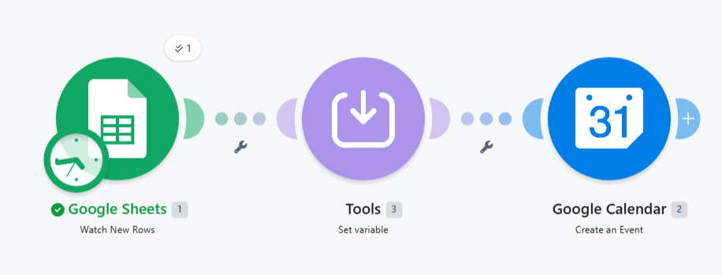
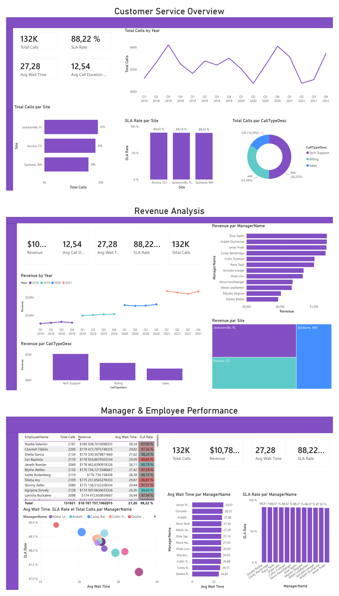

📁 Mes projets
Une sélection de projets qui montrent concrètement ce que je sais construire : applications IA, automatisations, sites web, puis analyses de données et machine learning. Cette page s'enrichit au fil de mes réalisations.
⭐ Projets en vedette
🎬 Studio vidéo IA — de l'idée à la vidéo publiée
Une fiche en entrée, une vidéo publiable en sortie.
Scénario, illustrations IA, voix, animations, montage : tout est automatisé, en français et en anglais.
🚀 CareerCopilot — Job Search & CV Matcher
Trouver les bonnes offres, sans passer des heures à chercher.
Il centralise les offres d'emploi et compare ton CV à chacune.
🏗️ Stage CJBAT — facturation & site web
Une entreprise équipée en facturation et en site web.
Logiciel de facturation mis en place, personnel formé, site Flask en production.
⚙️ Automatisation de prise de rendez-vous — Make

Zéro saisie manuelle des rendez-vous.
Le formulaire remplit Google Sheets, Make crée l'événement dans Google Calendar.
📊 Data, dashboards & machine learning
🌐 Site vitrine MadameDataIT
Ce site, codé à la main, noté 100/100 en SEO.
HTML/CSS pur, hébergé sur GitHub Pages avec domaine personnalisé.
📊 Dashboard Power BI — Service Client

132 000 appels analysés en un coup d'œil.
SLA, temps d'attente et performance financière par site et par manager.
⚡ Dashboard Power BI — Énergie France
La production et la consommation électrique de la France.
Vue nationale, régions, mix énergétique et évolution dans le temps.
📦 Dashboard Looker Studio — Warehouse / Stores / Delivery
Plus de 7 000 livraisons suivies.
Délais, colis endommagés et retours entre entrepôts et magasins.
🌍 Dashboard Looker Studio — Analyse Mondiale de la Population
La démographie mondiale, pays par pays.
Population, répartition hommes/femmes et indicateurs socio-économiques.
🚢 App Streamlit — Titanic & Spaceship Titanic, Machine Learning
Qui aurait survécu ? Le machine learning répond.
891 passagers, puis le Spaceship Titanic : trois modèles comparés.
💤 Appli en veille ? ouvrez-la ici (réveil : environ 30 s)
🏦 App Streamlit — German Credit, profil & risque
1 000 dossiers de crédit, un score de risque.
Profils d'emprunteurs et indicateurs pour repérer le risque.
💤 Appli en veille ? ouvrez-la ici (réveil : environ 30 s)
🏢 App Streamlit — Energy Efficiency, classification ML
96,10 % de précision pour classer 768 bâtiments.
Quatre classes énergétiques, trois modèles comparés (KNN, SVM, Random Forest).
💤 Appli en veille ? ouvrez-la ici (réveil : environ 30 s)
🚒 App Streamlit — London Fire Brigade, Machine Learning
Prédire le temps d'arrivée des secours.
Un modèle de machine learning à partir des interventions réelles.
💤 Appli en veille ? ouvrez-la ici (réveil : environ 30 s)
🗄️ Analyse de Performance Commerciale — SQL
Le classement des meilleurs vendeurs, en une requête.
CTE et fonctions fenêtre : chiffre d'affaires mensuel et cumul des ventes.
Vous avez un projet ?
Une application IA, une automatisation ou un site web : décrivez-moi votre besoin, on en parle.